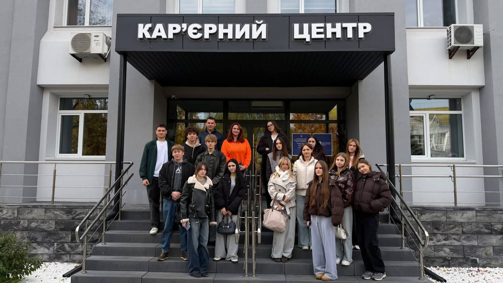
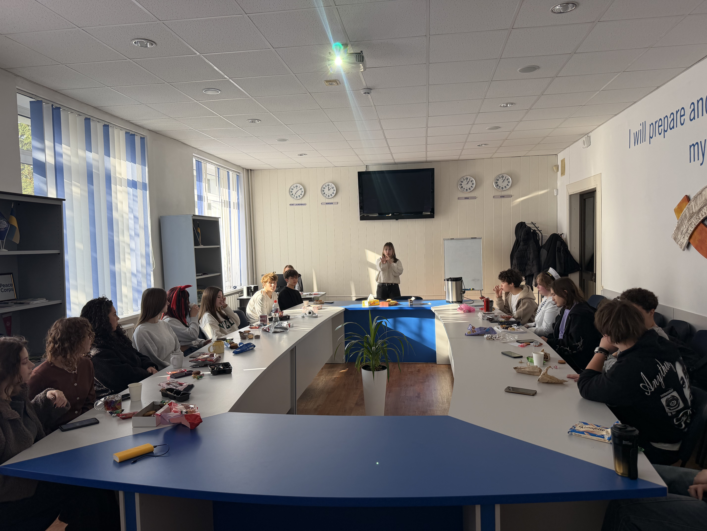
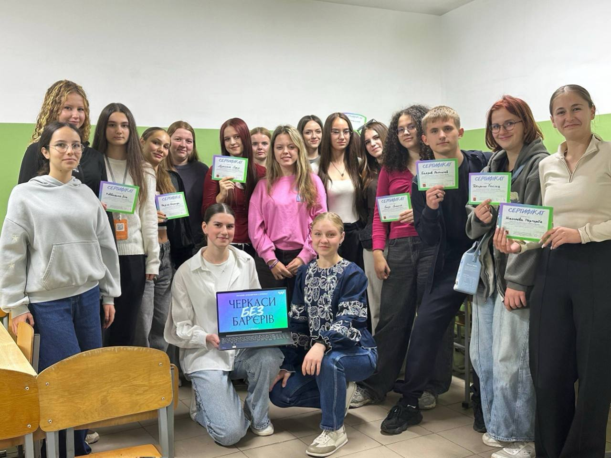
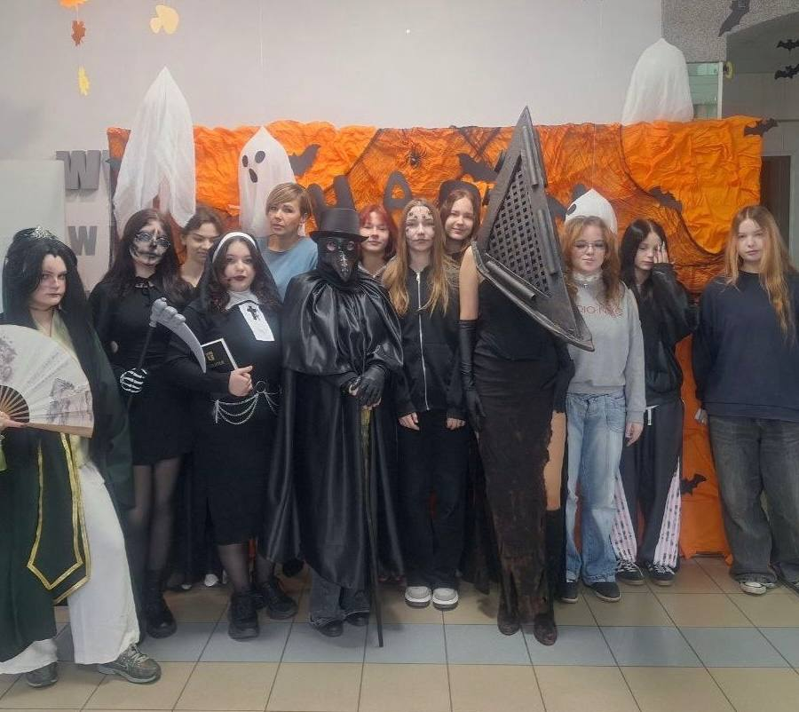

День відкритих дверей для абітурієнтів
Запрошуємо майбутніх студентів і батьків познайомитися з коледжем та викладачами.
Черкаси · з 1966 року
Фаховий передвищий коледж економіки, фінансів та IT. Вступ після 9 і 11 класу, денна та заочна форми.

Черкаський державний бізнес-коледж готує фахівців для бізнесу, фінансового сектору та IT майже шістдесят років. За цей час через наші аудиторії пройшли тисячі бухгалтерів, економістів, менеджерів і програмістів, які працюють по всій Україні та за кордоном.
Ми поєднуємо практичне навчання з академічною мобільністю: студенти беруть участь у міжнародних проєктах, вивчають мови в Lingua Hub і проходять практику в компаніях-партнерах.
Історія коледжуЧотири кроки, щоб стати студентом ЧДБК.
Перегляньте освітні програми та вартість навчання на 2026–2027 н.р.
Створіть електронний кабінет вступника та завантажте документи.
Перелік конкурсних предметів — у правилах прийому.
Рейтингові списки публікуються на сайті приймальної комісії.



Запрошуємо майбутніх студентів і батьків познайомитися з коледжем та викладачами.
Троє наших студентів увійшли до числа переможців.
Розмовний клуб англійської мови збирається щосереди.
Так. Після 9 класу ви одночасно здобуваєте повну загальну середню освіту та професію.
Так, коледж має місця регіонального замовлення. Обсяг на поточний рік публікує приймальна комісія.
Іногороднім студентам надається місце в гуртожитку коледжу.
Так, випускники вступають до університетів-партнерів на скорочений термін навчання.